Create a Spatialite Database and Insert Data to it
- In this tutorial we will learn how to create a spatialite database and how to insert data to it.
Steps
- Download the required data
- Load the data to QGIS
- Create a table join between using (Join Attributes by Field Values) algorithm
- Create a Spatialite database and connect to it using QGIS DB Manager
- Insert data into the database
- Run basic SQL queries on the database
Download the required data:
Data Sources:
- First go to GADM website by clicking on the following link GADM and from the Country drop down menu choose United States. Then click on Shapefile to download it:
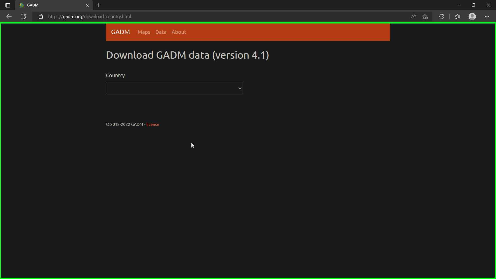
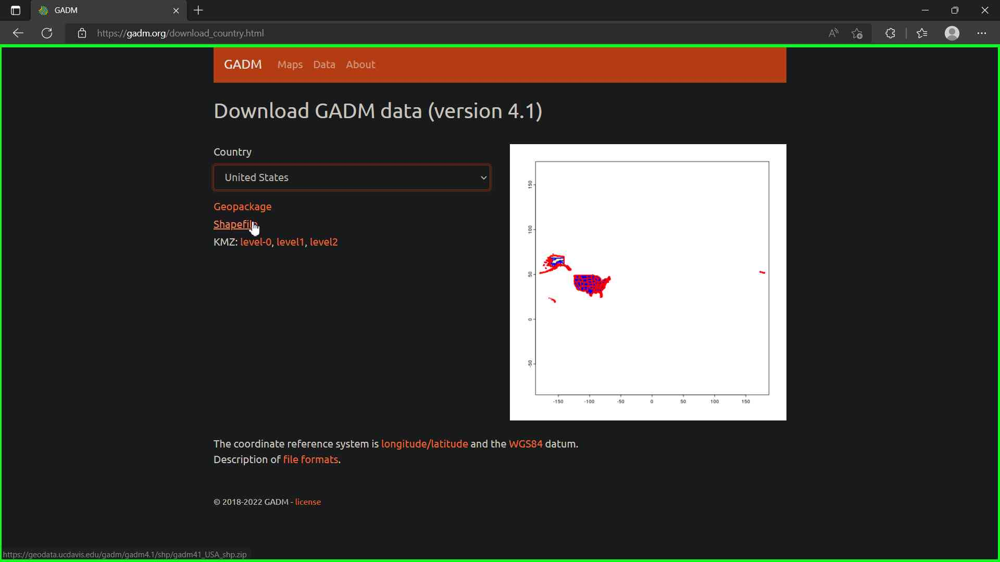
- Go to World Population Review website and download the csv files containing the population data of us states.
-
We will need to download two files the 'US states - Ranked by Population 2022.csv' and the 'District of Columbia and Puerto Rico.csv'.
-
After that we can open both files in microsoft excel or we can use a free software called Only Office to copy the data of District of Columbia to the 'US states - Ranked by Population 2022.csv'.
Load the data to QGIS
- Open a new project in QGIS software and add the 'gadm41_USA_1.shp' data file.
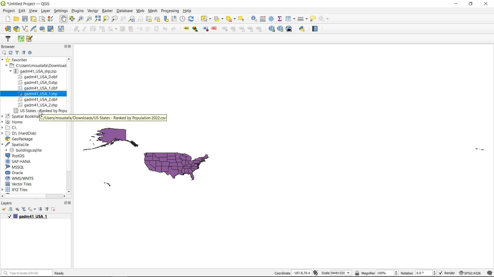
- Now, let's explore the attribute table of the new layer to see its content.
-
As we can see from the picture above the us states are inside a field called 'Name_1'. We will use this name later in the tutorial.
-
Now, let's add the second data file. Click on the Layer menu and choose 'Add Delimited Text Layer' option. A new window will appear, click on the icon nexxt to the File name to choose the 'US states - Ranked by Population 2022.csv' file:

- Also, In the Geometry Definition make sure to choose the 'No geometry (attribute only table)' option. Then click Add.
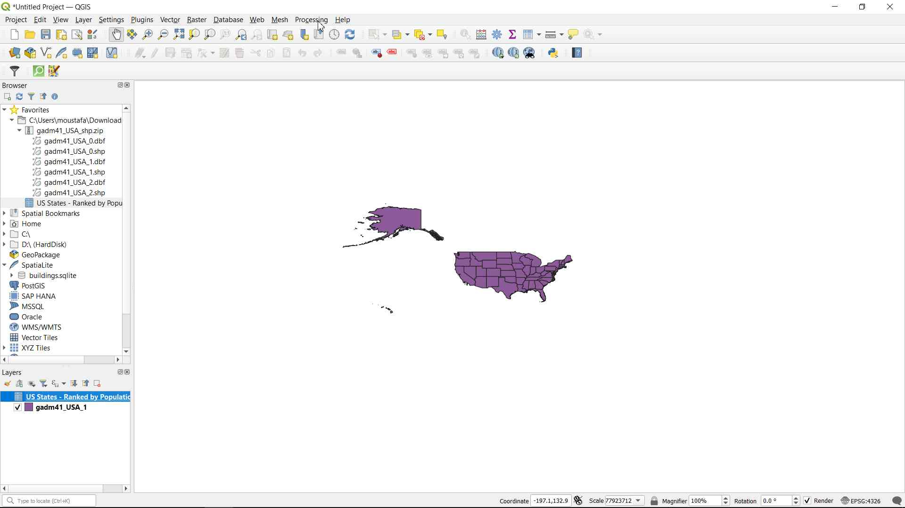
- A new layer is added to the Layers panel.
Create a table join between using (Join Attributes by Field Values) algorithm
-
From the QGIS toolbar click on Processing menu and choose Toolbox.
-
In the Processing Toolbox search bar type 'table join' and double click on 'Join attributes by field value' under the Vector general tools to open it.
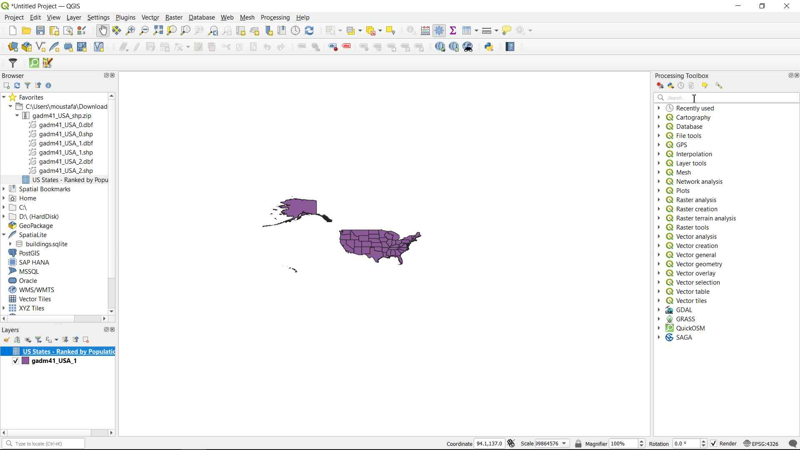

- The Join Attributes by Field Value window will appear. In the Input layer option choose the 'gadm41_USA_1' layer. And in the Table field option choose 'Name_1':
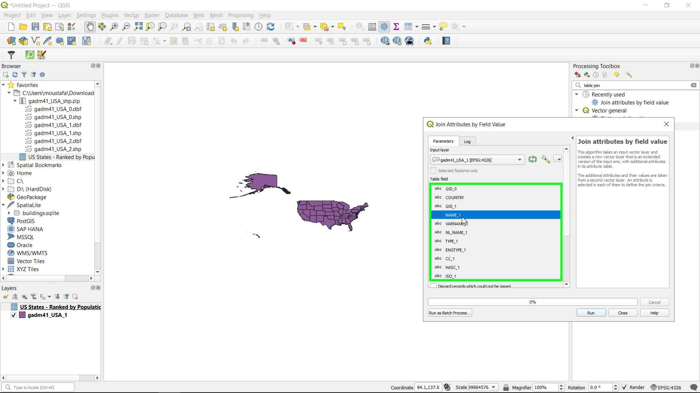
- In the Input layer 2 option make sure it has our second layer 'US states - Ranked by Population 2022' and then, click on the Table field 2 to choose the field that contains the US States 'State'
- Click on the button next to the 'Layer 2 fields to copy (leave empty to copy all fields) optional' to choose the fields we want to join in our case we need 3 fields (Pop, Pop2021, Pop2010) click on the checkboxes next to those fields. Then click on the blue back arrow to go back to the Join Attributes by Field Value window
- Scroll down to the Joined layer option and click on the button next to it and choose Save to File to save the new joined layer to a shape file. Choose a name to the new layer (like us_state_pop.shp) abd a location of the new file (like on the Desktop).
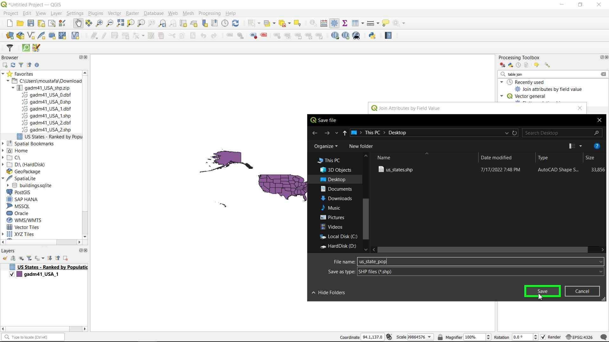
- Now, click on Run to run the algorithm.
- The new layer is added, let's see its attribute table to see the new fields
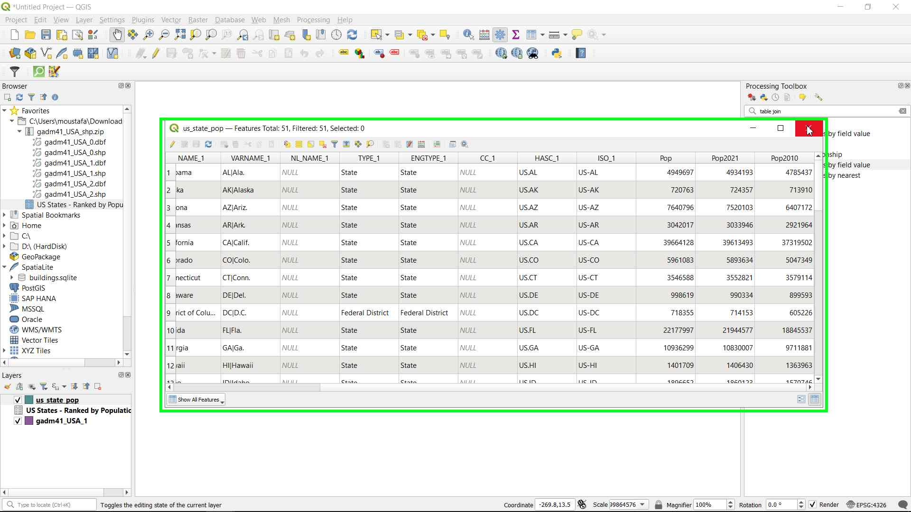
- As we can see in the screen above, there are 3 new fields (Pop, Pop2021m Pop2010) added to the main layer.
Create a Spatialite database and connect to it using QGIS DB Manager
- In the QGIS Browser panel rigth click on SpatiaLite and choose Create Database, a new window will appear. Choose a location to save the database and database name (like us_states_pop) then click on save.
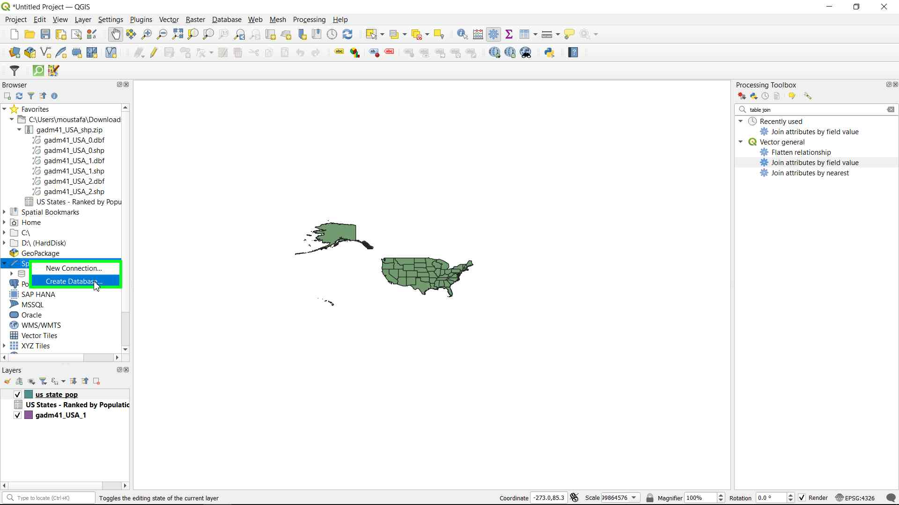
- Now, let's connect to our newly created database. In the QGIS toolbar open Database > DB Manager
- The Database Manager window will open. From the Providers panel expand SpatiaLite > us_states_pop to connect to the database.
Insert data into the database
- From the Datebase Manager window click on the 'Import Layer File' button to insert a layer file to the database.
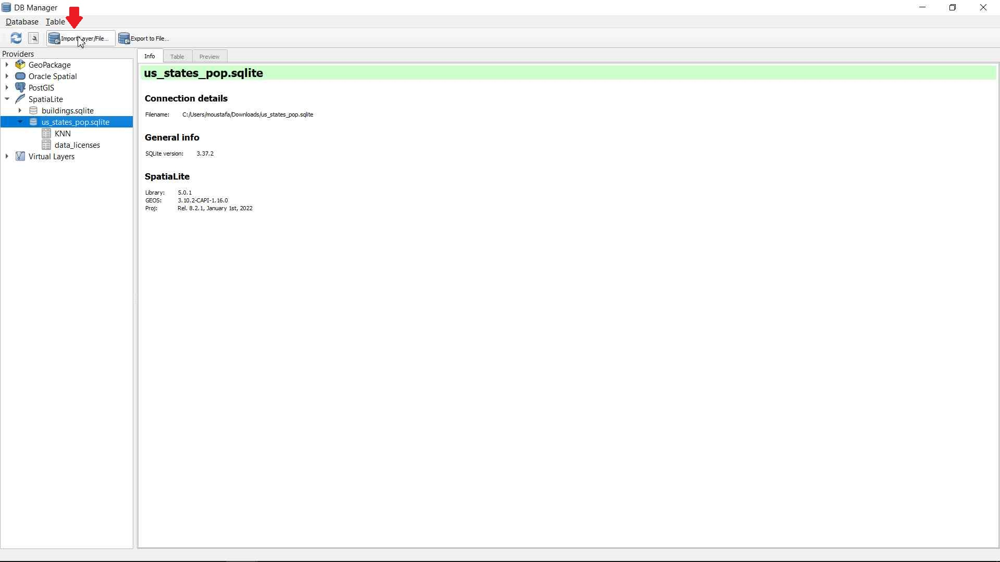
-
A new window will appear, Make sure that 'us_state_pop' layer is selected in the Input option, and click on the checkboxes next to Primary Key and Create spatial index options to activate them.
-
The Primary Key option creates a new unique key to each record of the database, we can call the field whatever we like, but in this tutorial I will choose the default value 'id'.
-
The Create spatial index option, is used with spatial data to imorive the queries time.
-
Finally click Ok to load the data.
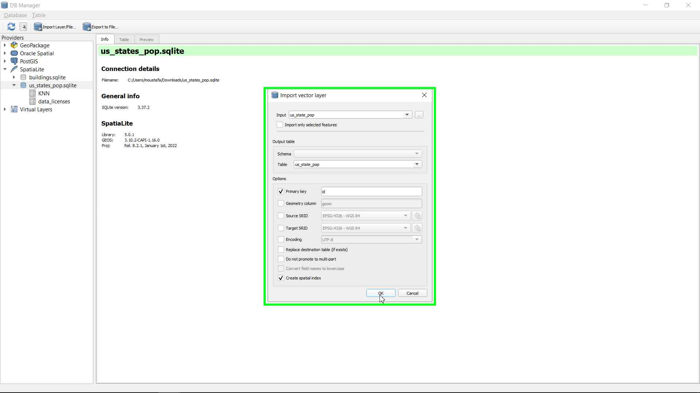
- A new table called us_state_pop is added to our database. Click on the Table tab to see its data.
Run basic SQL queries on the database
- In the DB Manager window, click on the SQL Window, to open the SQL Query window
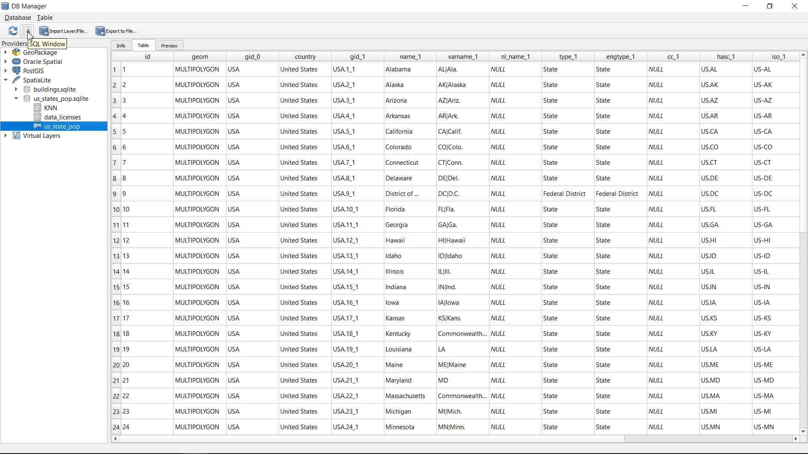
- Let's write a SQL query to retrive a record about New York city
select * from us_state_pop where Name_1 = "New York";
- Next, click on Execute to run the query
- Here is the result:
- Another example, let's say we want to retrieve the name and population of all the states that have more than 10 million population. select Name_1, Pop from us_state_pop where Pop > 10000000;
-
And that's it for today's tutorial. We can see how easy it is to create, manage and query spatial databases using QGIS.
-
In a later tutorial, we will learn how to create a PostGIS database and query it's content.